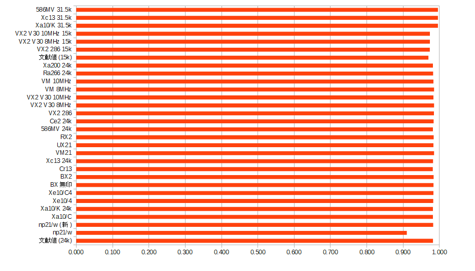

テキスト画面をフル活用するプログラムにおいて、実機とNeko Project 21/Wの結果が異なることが分かり、調査の結果として垂直同期信号の扱いに差があることが判明しました。
文献には垂直同期に関わる各区間（垂直フロントポーチVFP, 垂直バックポーチVBP, 垂直同期VSync, 垂直周期Vなど）の時間が明記されていますが、以下のことについて明記している文献は発見できませんでした。
そこで、これらが実際にどうであるかを検証するプログラムを作成し結果を募集したところ、多くの方にご協力をいただけたため、お礼の気持ちとしてここにその結果をまとめたいと思います。
非常に大雑把ですが、本資料では以下のように定義します。
オシロスコープで信号線を覗いたとしても、フラグがいつ立って割り込みがいつ出ていてるかを見るのは手間ですし、実施ハードルも高いです。 そこで、ソフトウェア的にVSYNC区間を調査するプログラム（VSIRRCHK.COM）を作成し、配布して検証してもらうことにしました。
測定はシンプルで、CPUを割り込み禁止にするとVSYNC割り込み要求時にPICのIRRビットが立つことを利用します。 つまり、GDC VSYNCビットとPICのIRRビットをループで観測し続ければ、ループ1回分の精度でGDC VSYNCビットと割り込み発生のタイミング差を測定できます。 ただし、ループ回数なので実時間としていくつなのかは分かりません。
具体的には以下の手順で測定を行います。
ここで測定されるのは、垂直周期Vのループカウント数、GDC VSYNCビットがON/OFFになったときのループカウント数、VSYNC割り込みが発生したときのループカウント数の3つです。 絶対的な時間は分かりませんが、垂直周期Vに対してGDC VSYNCビットがONの期間が占める割合を求めれば、文献値との比較によってどの範囲でビットが立っている可能性が高いかを特定できます。 また、GDC VSYNCビットのカウントとVSYNC割り込みのカウントは同じ基準なので、割り込み発生タイミングもある程度特定できます。
以下の表は、報告を受けた各機種において、生のループカウント値(CPU性能依存)と、そこから換算したGDC VSYNC High区間を除く割合(Ratio)、および割込位置の判定(High=GDC VSYNC High遷移で割り込み, Low=GDC VSYNC Low遷移で割り込み)を記録したものです。
文献値は文献に記載されている実際の時間を用いて計算したものです。
| 文献値(24k) | Xa10 | Xa10(2) 24k | np21/w(旧) | np21/w(新) | BX無印 | BX2 | Cr13 | Xc13 24k | VM21 | UX21 | RX2 | 586MV 24k | Ce2 24k | VX2 286 | VX2 V30 8MHz | VX2 V30 10MHz | VM 8MHz | VM 10MHz | 文献値(15k) | VX2 286 15k | VX2 V30 8MHz 15k | VX2 V30 10MHz 15k | Xa10(2) 31.5k | Xc13 31.5k | 586MV 31.5k | Ce2 31k | |
|---|---|---|---|---|---|---|---|---|---|---|---|---|---|---|---|---|---|---|---|---|---|---|---|---|---|---|---|
| VSync IRQ | ? | 8702 | 7725 | 2437 | 14055 | 3677 | 4963 | 8872 | 8825 | 525 | 1283 | 1528 | 7481 | 4964 | 1086 | 525 | 648 | 525 | 648 | ? | 984 | 476 | 588 | 6284 | 7178 | 6054 | 4052 |
| VSync High | 17.4 | 8544 | 7725 | 2437 | 14055 | 3677 | 4963 | 8873 | 8826 | 525 | 1283 | 1528 | 7482 | 4964 | 1086 | 525 | 648 | 525 | 648 | 15.83 | 984 | 476 | 588 | 6284 | 7179 | 6054 | 4052 |
| VSync Low | 17.72 | 8702 | 7868 | 2678 | 14304 | 3739 | 5045 | 9040 | 8987 | 533 | 1305 | 1553 | 7620 | 5046 | 1103 | 533 | 659 | 533 | 659 | 16.33 | 1011 | 489 | 604 | 6312 | 7211 | 6081 | 4068 |
| Ratio | 0.982 | 0.982 | 0.982 | 0.910 | 0.983 | 0.983 | 0.984 | 0.982 | 0.982 | 0.985 | 0.983 | 0.984 | 0.982 | 0.984 | 0.985 | 0.985 | 0.983 | 0.985 | 0.983 | 0.969 | 0.973 | 0.973 | 0.974 | 0.996 | 0.996 | 0.996 | 0.996 |
| 割込位置 | ? | Low | High | High | High | High | High | High | High | High | High | High | High | High | High | High | High | High | High | ? | High | High | High | High | High | High | High |

上記調査結果により、以下のことはほぼ確実だと思われます。
15k, 24kは文献通り、31.5kは文献を持っていませんが、31.5k同士の結果は整合しています。 例外の1件の原因はよく分かりません。24k, 31.5kで計り直しても一貫してLowでした。何か故障しているのかもしれません。
他の機種での結果が得られましたら今後も追記していきます。